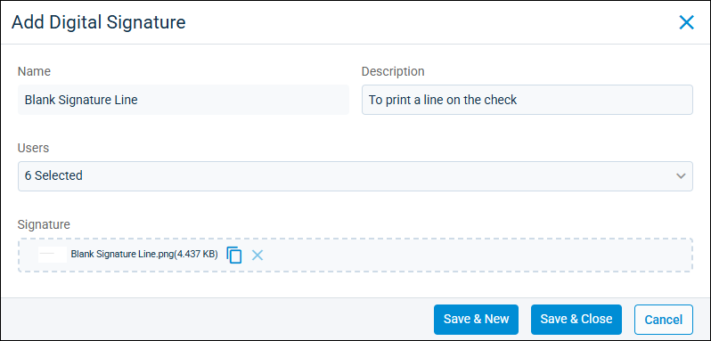

Source: https://rmxhelp.rentmanager.com/Topics/Express/Action/Checks-Print-Blank-Signature.htm
Add a Blank Signature Line to a Check
If your check stock doesn't have a signature line, you might need to add a signature line to check stock before printing checks. In Rent Manager you can upload an image of a blank line as a digital signature that you can apply to checks printed from Rent Manager. To create the image file for the signature line, use an editing software, such MS Paint, to first create the blank line file on your computer.
Related Privileges
| Group | Privilege | Column |
|---|---|---|
| Banks/Checks | Digital signatures | Add, View |
For more information, refer to Control User Access.
To add a blank signature line to use when printing checks, do the following:
-
Go to
 arrow_forward Payables arrow_forward
arrow_forward Payables arrow_forward  Payables Setup arrow_forward General arrow_forward Digital Signatures.
Payables Setup arrow_forward General arrow_forward Digital Signatures.
The Digital Signature page displays. -
Click
 Add Digital Signature.
Add Digital Signature.
-
Enter a Name and Description. For the Name, use a name like Blank Signature Line to clarify that you're uploading a blank line to be printed on checks as a signature line. For the Description, clarify when to use this (for example, To Print a Line on the Check).
-
In the Users drop-down, select the users who are allowed to add this signature when printing checks.
-
In the Signature field, click and browse your device to add the image of the blank line.
-
To finish, click Save & Close, or to create additional digital signatures, click Save & New.
The blank signature line is added as a digital signature, and the users with access can apply it when printing checks from Rent Manager.